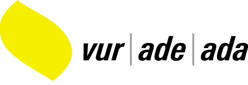

|
|
En partenariat avec |
Objectifs
Les études avancées permettent aux participants :
- D‘identifier les risques et les opportunités dus aux exigences croissantes du législateur et des consommateurs pour mieux se positionner sur les marchés de demain
- De développer une approche managériale axée sur la performance économique, environnementale et la responsabilité sociale
- D’acquérir de nouveaux outils, afin d’évaluer, de gérer et de valoriser la durabilité de leur entreprise
- De communiquer sur la performance environnementale et sociale pour se différencier de la concurrence
- De réorienter ou développer leur carrière à l’aide de nouvelles compétences clés
Public cible
Le CAS s‘adresse aux professionnels des entreprises de production et de service, des collectivités publiques, mais aussi des institutions des secteurs de la santé. La formation s’adresse à des :
- Responsables actuels ou futurs de la qualité, de l‘environnement ou de la sécurité
- Responsables de production
- Responsables des ressources humaines
- Chefs de service
- Directeurs et entrepreneurs
- Ingénieurs, architectes, juristes, techniciens.
- Consultants
- Personnes qui souhaitent réorienter leur carrière professionnelle
Cette formation est recommandée par les associations suivantes :
|
|
 |
|
|

Leurs membres ont droit à un rabais de CHF 300.- sur la finance d'inscription.